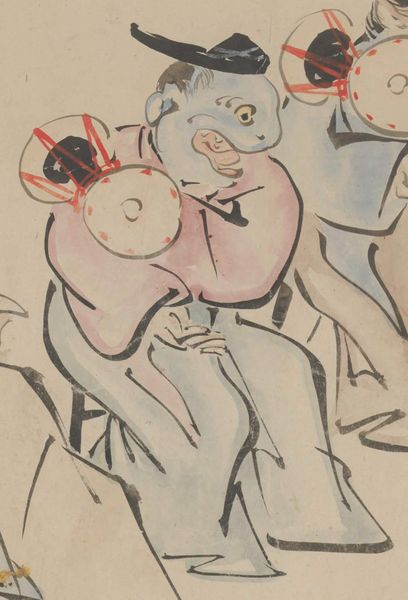

← 图鉴索引

烏帽子を被り装束を着た、一つ目のように見える青い顔の妖怪が鼓を打っている。
出典：親書誌：U426_nichibunken_0435：［妖怪絵巻］／日付：2017／資源識別子：U426_nichibunken_0435_0001_0012
Copyright (c)2010- International Research Center for Japanese Studies, Kyoto, Japan. All rights reserved.